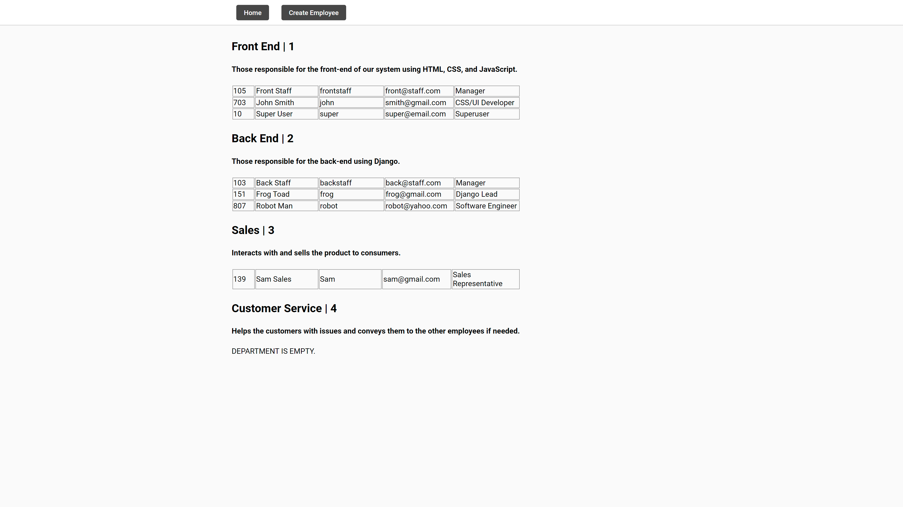
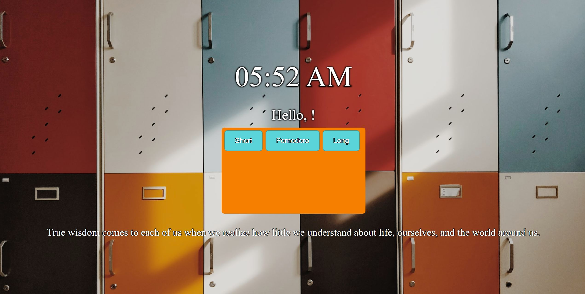

Employee Manager

Text and image searcher allowing you basic and advanced ways to search the web.
Developed using Django and Python for the backend, and HTML, JavaScript, and CSS for the frontend.
Chrome Sharp

Chrome Sharp is a Chrome extension that changes the new tab to have a Pomodoro timer, changing backgrounds and quotes, and a inputtable name field.
Developed using HTML, CSS, JavaScript, and the Chrome API.
Reflector

Game that utilizes advanced projectile physics to reflect projectiles perfectly off of surfaces. The player is tasked with using their spatial skills to hit all the blue orbs.
Developed using the Unity Engine, Blender, and C#.